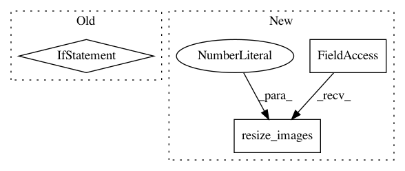

bf5a658ee5bb3cdfe6eb2ec92467610b522aa70f,examples/wordvec-to-word.py,,g_resize_conv_create,#Any#Any#Any#,115
Before Change
//stride = [1,64,4,1]
//gs[-1] = tf.nn.avg_pool(gs[-1], ksize=filter, strides=stride, padding="SAME")
gs[-1] = linear(tf.reshape(gs[-1], [gan.config.batch_size, -1]), 16, scope="g_2d_lin")
if config.final_activation:
if config.layer_regularizer:
gs[-1] = config.layer_regularizer(gan.config.batch_size, name="g_bn_first3_")(gs[-1])
gs[-1] = config.final_activation(gs[-1])
//gs[-1] = tf.slice(gs[-1], [0,16,1,0], [-1, 16, 1, 1])
//gs[-1] = tf.image.resize_images(gs[-1], [16,1], 1)
//gs[-1] = tf.reshape(gs[-1], [gan.config.batch_size, 16])
return gs
def d_pyramid_create(gan, config, x, g, xs, gs, prefix="d_"):
print("x,g",x,g)
After Change
//gs[-1] = tf.slice(gs[-1], [0,16,1,0], [-1, 16, 1, 1])
gs[-1] = tf.image.resize_images(gs[-1], [16,1], 1)
gs[-1] = tf.reshape(gs[-1], [gan.config.batch_size, 16])
return gs
def d_pyramid_create(gan, config, x, g, xs, gs, prefix="d_"):
In pattern: SUPERPATTERN
Frequency: 3
Non-data size: 3
Instances
Project Name: HyperGAN/HyperGAN
Commit Name: bf5a658ee5bb3cdfe6eb2ec92467610b522aa70f
Time: 2017-03-07
Author: martyn@255bits.com
File Name: examples/wordvec-to-word.py
Class Name:
Method Name: g_resize_conv_create
Project Name: HyperGAN/HyperGAN
Commit Name: 3159bd786503bf40f622c66d5044970bbee50b02
Time: 2017-01-09
Author: mikkel@255bits.com
File Name: hypergan/generators/resize_conv.py
Class Name:
Method Name: generator
Project Name: HyperGAN/HyperGAN
Commit Name: 5d94c905ec871b29fb9a44cbe31e3bdf3e0f6bc0
Time: 2017-02-10
Author: martyn@255bits.com
File Name: examples/super-resolution.py
Class Name:
Method Name: add_lowres